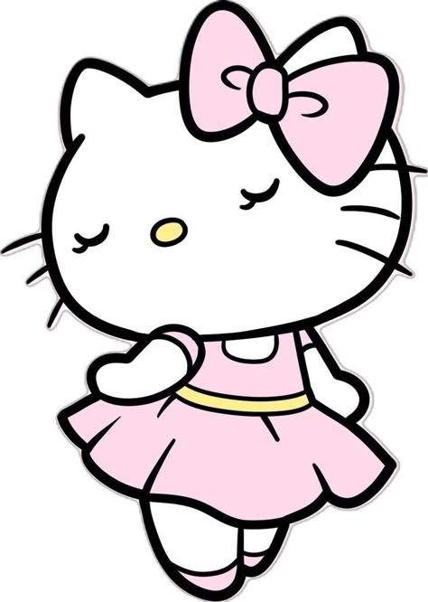
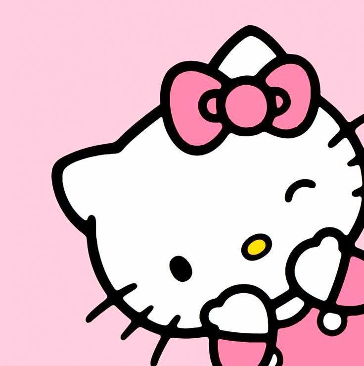

«Ты можешь быть кем угодно, главное — оставаться милым» — неофициальный девиз вселенной Hello Kitty.

С тех пор она покорила мир, а пользователи интернета превратили её в мем.

В России Hello Kitty начала набирать популярность в 2000-х годах, когда появились первые официальные магазины атрибутики. А в 2010-х годах она стала символом уютной эстетики в социальных сетях.
| На 2026 год | около 1 миллиарда человек по всему миру знают Hello Kitty |
| конкретно в России | от 10 млн до 30 млн поклонников |
«Это очень мило, и так согревает» — говорят пользователи Интернета, когда видят посты с этой кошечкой.
Таким образом, появились целые бренды, посвящённые этой тематике, и люди, в свободном доступе, смогут ознакомиться с таким контентом.